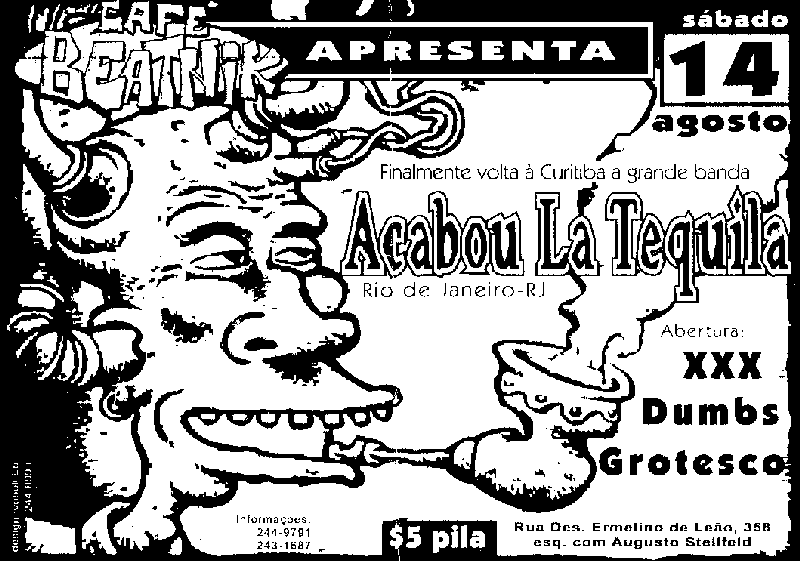

![[voltar pra casa]](../imagens/casa.gif)
show 19990814
finalmente, depois de um jejum de 1 ano e 8 meses pisar num palco, o DUMBS voltou oficialmente a ativa neste sábado. o café beatnick até que estava cheio e encontramos vários camaradas das antigas lá (e a maioria pensava que a banda tinha acabado...). cara, é muito tempo longe. já tínhamos a muito esquecido o que era fazer: subir no palco, encarar a moçada, olhar o agito, escutar os gritos, ver pessoas cantando junto as músicas. e para melhorar, estávamos na fissura extrema, com muita vontade de tocar e o público parecia receptivo. apesar daquela estranheza inicial, normal por ser algo que não fazíamos a tempos, o show se desenvolveu naturalmente, e em poucos minutos estávamos à vontade. o nissin pulando feito doido, e o fejão se esganiçando no vocal e o aurelio se contorcendo na bateria. até o daniel agitou, e acabou o show com a mão coberta de sangue por raspar nas cordas. é claro, tivemos nossos erros, como não poderia deixar de ser. fizemos uma caca em "se liga e desliga" que ficou irreconhecível, mas o importante é que não parou &:) pena que a filmadora não funcionou na hora... &:( mas o que importa é que o DUMBS voltou! depois de meia hora de show e 4 "covers" no percurso, acabamos, cansados e felizes por não ter deixado a banda morrer apesar das dificuldades. esse show foi o impulso que faltava para a banda voltar de vez à cena.
repertório:
01 opinião 02 life o'mine 03 se liga e desliga 04 fraco 05 lesson one 06 intro 07 cdf 08 mentira 09 gás 10 espera 11 vou dormir 12 milho verde 13 hobophobic (NOFX) 14 mãozinha (OSCABELODURO) 15 molecada 666 (DFC) 16 sticking in my eye (NOFX)
fotos:
visão geral do beatnick e da galera (e da faixa mala do tequila...), tava
cheião
DUMBS em ação - parte I
DUMBS em ação - parte II
cartaz:
